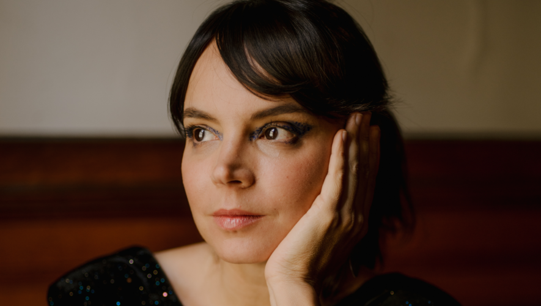

A native from Lisboa, Portuguese Sara Serpa is a singer, composer, improviser, who through her practice and performance, explores the use of the voice as an instrument, working in the field of jazz, improvised and experimental music, since moving to New York in 2008. Literature, film, visual arts, nature and history inspire Serpa in the creative process and development of her music. Described by the New York Times as “a singer of silvery poise and cosmopolitan outlook,” and by the JazzTimes magazine as “a master of wordless landscapes,” Serpa started her recording and performing career with jazz luminaries such as Grammy-nominated pianist, Danilo Perez, Guggenheim and MacArthur Fellow pianist, Ran Blake, and Greg Osby.
Her ethereal music draws from a broad variety of inspirations including literature, film, visual arts as well as history and nature. As a leader, she has produced and released ten albums, the latest being Recognition, to be released in June 2020. A singular multi-disciplinary work that traces the historical legacy of Portuguese colonialism in Africa through moving image and sound, Recognition features Zeena Parkins (harp), Mark Turner (saxophone) and David Virelles (piano). In 2018 Serpa premiered Intimate Strangers, a collaboration with Nigerian writer Emmanuel Iduma, an interdisciplinary musical performance that portrays the writer’s travels in several African countries.
Serpa was voted Rising Star – Female Vocalist 2019 by the Downbeat Magazine Critics Poll, and teaches at The New School and New Jersey City University. Currently Serpa is Artist-In-Residence at Park Avenue Armory, in New York and a recipient of New York City Women’s Fund 2020, Chamber Music America New Jazz Works Grant 2019, New Music USA 2019 Grant.
Serpa has collaborated with an extensive array of musicians including Ingrid Laubrock, Erik Friedlander, John Zorn, Nicole Mitchell, André Matos, Guillermo Klein, Okkyung Lee, Guillermo Klein, Linda May Han Oh, Kris Davis, Okkyung Lee, Sofía Rei, Matt Mitchell, Zeena Parkins, Mark Turner, David Virelles, Tyshawn Sorey, Nicole Mitchell, Leo Genovese, Demian Cabaud, Fabian Almazan, Aya Nishina, Ashley Fure, Andreia Pinto Correia, Derek Bermel, Joseph C. Phillips Jr., among many others.
She has performed her own music in Europe, Australia, North and South America, singing at international festivals such as Bergamo Jazz Festival, Festa do Jazz, the Panama Jazz Festival, Festival de Jazz de Montevideo, Wangaratta Jazz Festival, Adelaide Festival, Sopot Jazz Festival or venues like Bimhuis, Casa da Música, Village Vanguard, Jazz Standard, The Stone, Brooklyn Academy of Music, the Metropolitan Museum of Art, Lincoln Center, the Met Breuer, and the Kennedy Center for the Arts, among others.